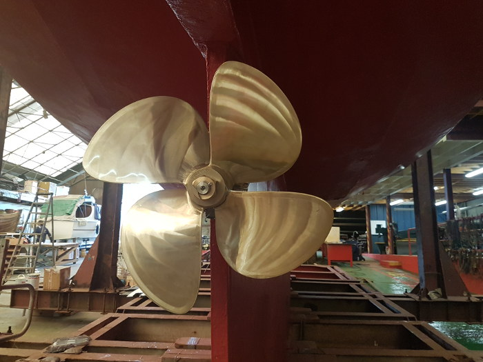
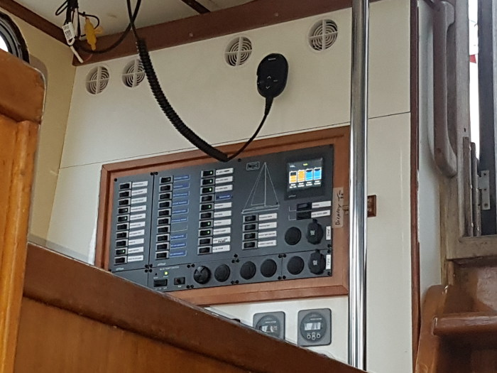

Segelyacht CORRYVRECKAN
Die Yacht trägt den Namen der Strasse von Corryvreckan, nördlich der Insel Jura gelegen. Diese Passage ist bekannt für Strudel und Wirbel wenn Gezeitenströmung und Wind aufeinander treffen. Auch viele Legenden ranken darum. Die Yacht segelt unter Schweizer Flagge. Sie wurde im Jahr 2018 vom Verein übernommen. CORRYVRECKAN wurde 1990 von einer holländischen Werft nach hohen Standards gebaut vor allem für Reisen an der Westküste Schottlands und anderen nördlichen Gebieten. Unter den vorherigen Eigentümern, Chris und Von Lindesmay war sie eine der bekannteren Charter Yachten an der Schottischen Westküste. Als Suncoast 60 in Stahl gebaut, einem Ketch Rig bietet sie mit 19 m Länge und einer Breite von 5 m komfortable Unterkunft für bis zu 10 Personen. Eine Verdrängung von 44 Tonnen, ein Tiefgang von 2.5 m tragen sehr zur Stabilität bei. Die Wassertanks von 2000 Litern und ein Dieseltank von 1200 Litern erlauben weiträumige Reisen. Mehrere Heizsysteme, 3 Badezimmer and ein grosses Cockpit machen Corryvreckan zu einem richtigen Schiff. Der grosse Salon mit gut eingerichtete Pantry, ein geschütztes Deckshaus und 6 Doppelkabinen bieten einer enthusiastischen Crew komfortable Bedingungen zum Bereisen der Hebriden und der Schottischen Westküste.

Im Frühjahr 2019 wurden umfangreiche Renovationsarbeiten vorgenommen. Ein neuer Motor, ein neuer Generator, neue Heizungen und eine komplette Neuinstrumentierung der Navigation wurden eingebaut, neben den üblichen Wartungsarbeiten.
